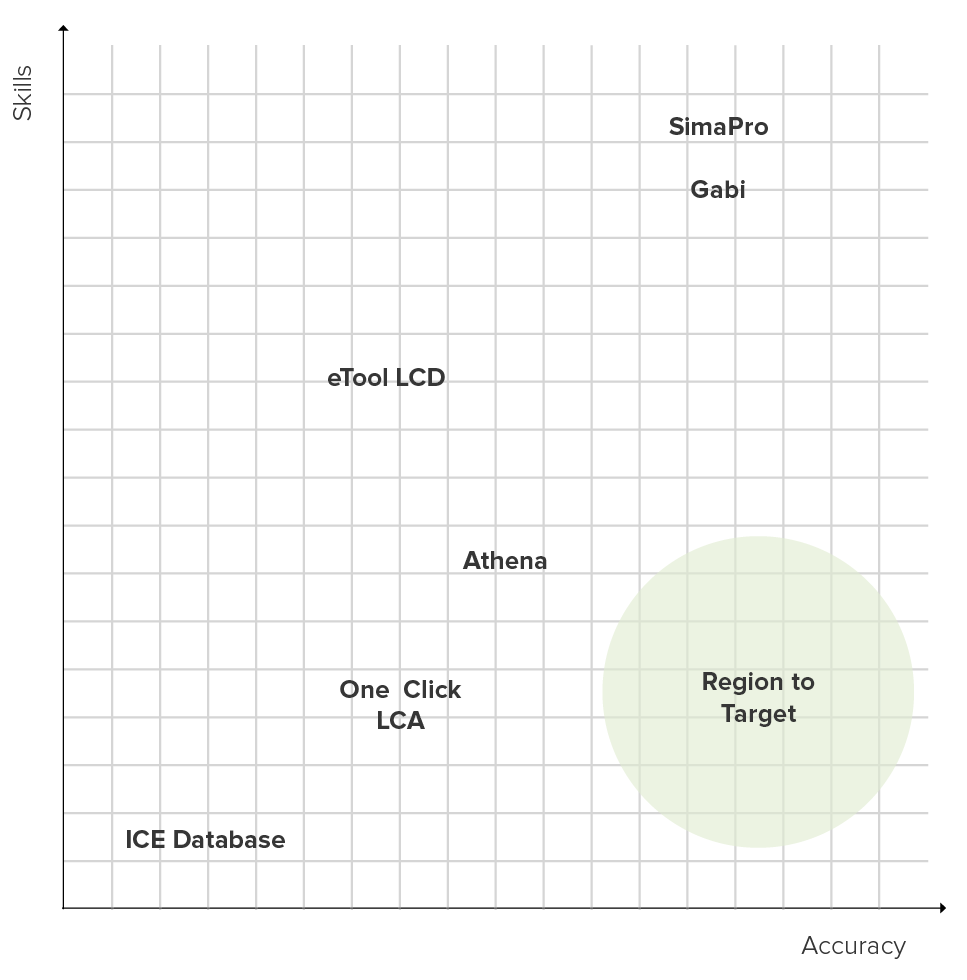
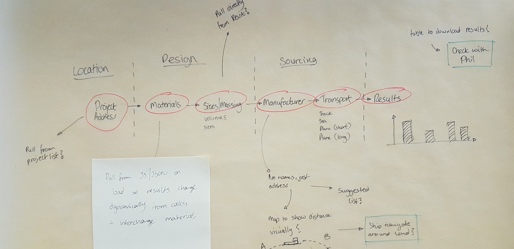
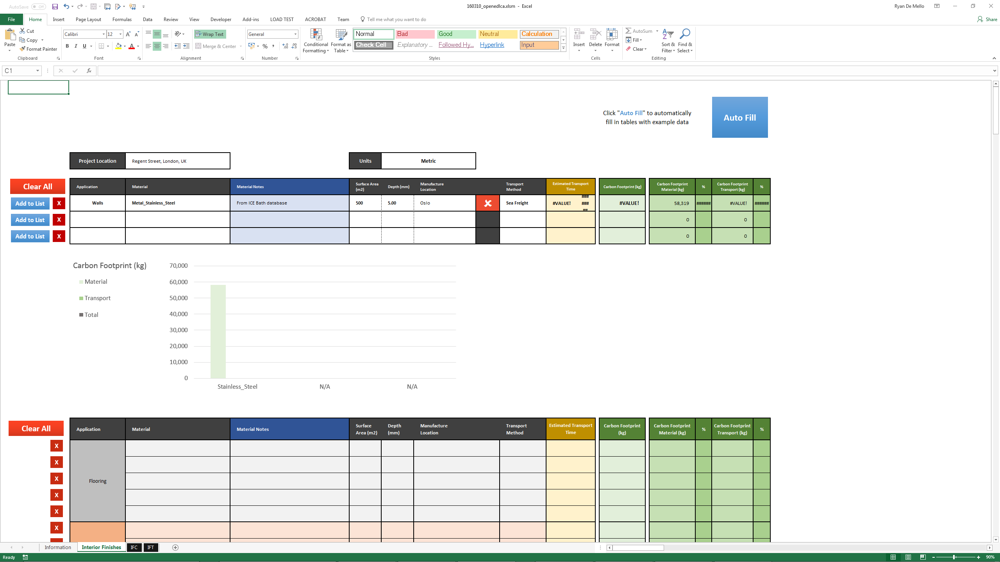
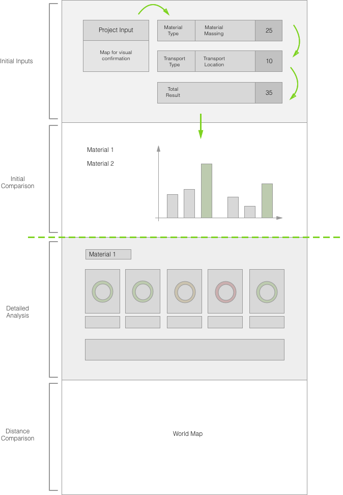

Project Sprout
Some information has been omitted from this case study due to confidentiality. The views and information shown are based of my own opinions and findings, which are not necessarily representative of Foster+Partners
Summary
A quick overview of the project
Problem
Being able to quantify sustainable decision making is becoming an increasing desire in the design world. Whilst there are standards and methodologies which are targeted
at evaluating a material's sustainable credentials there is still confusion regarding the technical terms. Furthermore all the tools which facilitate carrying out these calculations are
in their infant stages in the architecture industry, and are yet to penetrate into the design process.
Goal
The goal of this project was to make a tool that could use the data produced by companies on their materials or products, and allow for calculations to evaluate a materials impact.
The process would have to be simple, whilst helping the user understand the consequences of their decision making when specifying certain materials over others.
My Role
In my role at Foster+Partners, I had been tasked regularly with establishing how sustainable a material was for projects. This put me in a great position to be able to research the industry, and give an insight into
the experience of the parties involved when evaluating how sustainable a material is.
I carried out the testing of prototypes, the design of the final tool as well as putting together the code for the launched version.
Process
Research was initially carried out to understand the standardised process of measuring a materials environmental impact, as well as existing methods of analysing materials.
An initial prototype of the tool to check the viability used Excel with VBA. With a positive response, all prototyping was done with coded versions using HTML/SASS/JS,
with design being carried out in Sketch.
Outcome
The first prototype was launched for user testing and feedback amongst architects and members from the support disciplinary teams. Whilst there was a lot of interest from the managers in charge of projects, when it came down to
the architects who would actually use it, there was hesitation as it was new territory for them.

The second prototype instead reduced a lot of the choices and complication in the tool, breaking it down into just the material and two set choices for distance.
Full Overview
An in-depth look into the research, reasoning and creation of the tool
The Problem
Sustainable design has always been an important facet of architecture, and usually encompasses the integration of the building into its surrounding environment as a whole.
However as the global temperature rises, the greenhouse gas impacts of construction are being put under further scrutiny.
Whilst there are practices in place to address the concerns of carbon, the tools used to carry out these calculations are either not focused in architecture, or relatively new.
Thus these methods are yet to successfully integrate into the design process, resulting in them usually being sidelined.
The Starting Point
A manufacturer can work with a trained individual, in order to carry out a life cycle analysis (LCA) of a product they produce. There are ISO standards that this analysis must adhere to, which means there will always be a certain level of consistency between the set of information produced from different parties. At the end of the study, the information is presented in the form of an Environmental Product Declaration (EPD). Each EPD declares which parts of the life cycle it will be adressing: Production, Transport, Installation, Use, Disposal. Typically there are two types of depth to an EPD:
Cradle to Gate
This analysis takes into account the gathering, processing, transport and manufacture of raw materials into a product. It is the most common as it covers the phases that the manufacturer always has control of, and so they can declare the impacts of the product with a good degree of certainty.
Cradle to Grave
This analysis takes all of the above, as well as the other phases of transport, installation of the product, use and any maintence required, and finally the disposal at the end of it's life.
It is less common for a manufacturer to go to this level of detail due to the uncertainties and assumptions they must make after they have sold their product.
However EPDs are technical documents that aren't friendly to non-experienced readers and can be difficult to understand.
Whilst the information has been standardised to an extent, the first aim was to understand what the barriers to actually utilising it.
Technical Barriers
100 EPDs were selected, covering a range of typical building products including glazing, concrete, metal sheeting etc. The selection was reviewed with architects, to be able to ascertain what the issues were:
●The level of detail varied considerably, length from 6 to 22 pages
●There were inconsistencies in the functional unit applied for the calculations e.g. some would have a panel as a unit, others would have 1 cubic meter of material, or a tonne of material
●There was no visual consistency between different companies
●There are a number of technical terms and acronyms that are rarely explained
Graph showing the distribution of length of individual EPD's
How can they be used?
Ultimately this meant that the important information wasn't accessible to the designers. From speaking with architects and the managers on projects, the tasks related to sifting through the information would be delegated to a handful of "experts" or not considered. So how was this done?
The Existing Tools
EPD's are the base datasets for tools that allow the comparisons of designs.
They vary from free excel sheets, to fully-fledged software packages costing thousands of pounds.
These solutions attempt to address the issues, but the uptake is low. From some user trials and direct feedback,
the competition could be categorised into 3 types, with the following pros and cons:
Entry Level
ICE Database
The Inventory of Carbon and Energy (ICE) Database was compiled by Bath University, in an attempt to provide some context to the most common building materials. Although it was last updated in 2011, architects and sustainability engineers were both familiar with and had used it in the past. However, one of the core issues is the quality of the data. A number of the material profiles seemed to be based on research work, and not from full ISO complaint EPD's, partly due to how old the dataset is.
+ Information and products are listed simply and clearly
- Most of the data is research based
- Not all sources are listed, with limited transparency
Mid-Range
Athena, One Click LCA, eTool LCD
These mid-range tools were attempting to fill the sweet spot for the construction industry. They're process of building up an analysis carried the user through the steps of a building e.g.
the core structure volumes, facade areas and build ups, floor build ups etc. However there were still issues, which were limiting the uptake of these solutions,
eTool LCD for example primarily used Australian based data, with varying grid emissions to the rest of the world.
One Click LCA tried to present a simple one button solution that read a list of materials and provided results, however discussions with the company revealed that there weren't fail-safe methods in place
to ensure that the correct material profile was selected, meaning the results could be off by almost 100%. Whilst this range was a step in the right direction to other solutions, there were still barriers in place
that were slowing down uptake.
+ Builds up calculations from the architectural stand point
+ Speeds up the process and reduces the technical skills needed
- Shortcuts taken can result in wildly inaccurate results
- Locality of data not necessarily relevant
Expert
GaBi, SimaPro
Both GaBi and Simapro are the established tools in the industry, with SimaPro having the larger market share.
They have both been used to carry out the calculations in order to produce EPD's, with all this information on the systems, assumptions etc. included in the material profiles for transparency.
Although targeted at smaller scale products, they are both capable of calculations for buildings, with GaBi recently creating a Construction Database with specific material profiles.
This level of detail comes at the cost of a higher entry skill level, and skill ceiling. Both organisations offer 2-3 day workshops in order to train users up in how to use the software,
which results in a bottleneck in the work flow if only a few people are trained in using it.
+ Has great transparency to see the origins of data
+ Good levels of details and accuracy
- Requires a training course or experience to use properly
- Targeted at products, not buildings
From these options, the Mid-End options were the most common in the acrhitectural industry. They had been tailored towards architects, with the input process relating more to a building than a product. They also limited their materials data to include only typical architectural materials, reducing the complexity when selecting the material list.
Holding Hands
From discussions with the architects, I saw how they ideally would want to go through a process of selecting a material, and importantly how this could be supplemented
with cues and feedback to address some of the earlier issues.
This wasn't just onboarding, but being able to walk them through how their decisions can affect the final embodied carbon.

Project Location
The project location will never change, but importantly by allowing them to search for a physical world location, this can be geocoded and the longitude and latitude can be used later to calculate estimated distances automatically.
Choose Material/Product
Supporting information on each material and product would help validate the decisions, but importantly give the transparency where necessary to see the source of the data if further clarification is needed.
Dimensions
The functional unit in EPD's vary so much, and architects are familiar with both volumetric values for elements such as structure, and surface area for the skin. Some of them even struggled with converting between these functional unit, opening up the analysis to mistakes. By interpretting the EPD's, and forming a new dataset with comparable values, the user would be able to choose their volumes in a language they were more familiar with.
Manufacturer Location
The other tools require a value to be inputted for the transport in either km or miles, which would either be calculated using Google Maps or similar, or guessed entirely with an arbitrary value. However this task could be automated through geocoding the place names and using a formula to calculate the distance, thus simplifying the process.
Transport Methods
There are times in projects where poor planning can result in the need for speedier transport. Whilst the actual distance is an obvious component in scaling the impacts of sourcing, the transport method has a much bigger impact due to the magnitude of difference between transporting an item a certain distance between sea freight and plane (almost x100).
Results
The existing tools keep the final outcomes behind the calculations, which can be a lengthy process. If changes were to be made to any of the entries, the entire process would have to be started again. With all these variables, it would be essential to have the results update instantly, so that the user can quickly learn how the sustainability of their decisions.
Prototyping
This then laid out the flow of the design, and so I began to make quick principle proving prototypes in Excel VBA in order to test out a number of the features and ideas, but also
to guage how valuable it could be

The sheet was set up on the "Holding the Hand" principle, having the user fill out a form on a step-by-step basis using a breakdown of the overall process.
It was distributed to architects and engineers for testing and feedback.
Feedback
Knowledge
As a whole, the users were very unfamiliar with the process and the magnitude of impacts between materials
Shipping
The impacts of transport were known to some degree, but were not expected to the scale presented
Metrics
There were questions raised on other metrics outside of embodied carbon
Prototyping
The initial insights were used to create a prototype web-app that was used tested on a variety of users including architects, engineers and sustainability coordinators.
Initial Prototype
wer
Launching
Following an initial approval process, the tool was launched onto the Foster+Partners intranet, a long with a logger to be able to track who was using it.
Overall it was received quite well, with a high number of users from various teams.
Following this initial launch, the logger was analysed to reveal that the primary users of the tool were actually members from support teams, including EE, SMG, Sustainability and CRG.
I had spoke with some of them, and found that they had been using it both as a supporting tool when discussing with architects, but also for their own work which involves modelling or suggestions that
require a range of products.